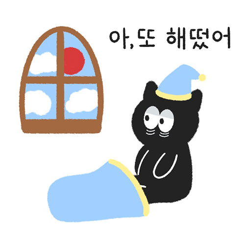

수면장애 정의

건강한 수면을 취하지 못하거나, 충분한 수면을 취하고 있음에도 낮 동안에 각성을 유지하지 못하는 상태
또는 수면리듬이 흐트러져 있어서 잠자거나 깨어있을떄 어려움을 겪는 상태를 포함하는 개념
수면장애 진단하기
잠들기까지 30분 이상 걸린다
깊게 잠들지 못한다
새벽에 3번 이상 깬다
예정 시간보다 일찍 깬다
항상 꿈이 선명하게 기억난다
자도 개운함이 없다
낮에 계속 졸립다
이 중 3개 이상이 해당하면 수면 장애를 겪고 있다고 볼 수 있다!


 >
>